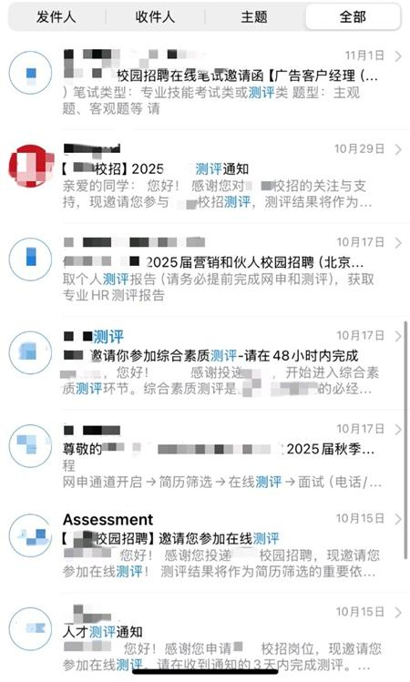

还没见到面试官，先要回答多少题？
2024年秋招，张子凡清空书桌，调整好电脑摄像头，又把手机架在侧后方。他打开一家国企发来的测评链接，开始作答。
60道行测题，120道性格测试题。
两个小时后，这次测评才结束。
这个秋招季，他做了不下50份测评。
一份答卷交上去，求职的等待仍在继续。张子凡经历的这个秋招季里，许多时间被分给了尚未见面的企业。一次次的打开链接，也把通往面试的路延长到了屏幕前。

张子凡为化名。邮箱图片为报道中受访者供图，不特指张子凡。
来源：中国青年报《别让“做不完的测评”难住求职大学生》，2025年1月3日。报道原文